Project 2: Fun with Filters and Frequencies
1.1 Convolutions from Scratch
Convolve my grayscale lake photograph (384 × 512, values in [0, 1]) with a 9 × 9 box filter, Dx = [1, 0, −1], and Dy = DxT. The box filter is np.ones((9, 9)) / 81.
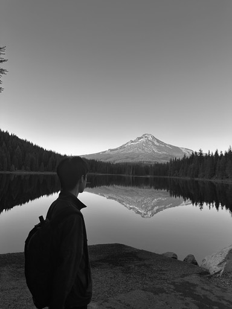
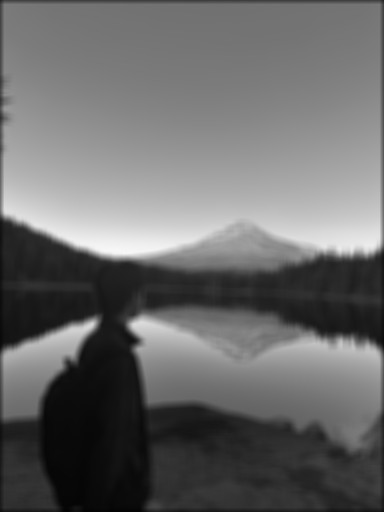
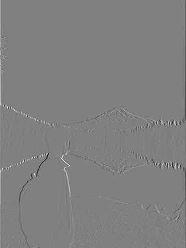
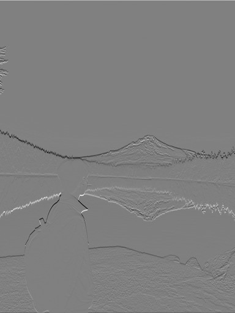
Both implementations flip the filter and use zero padding for an output the same size as the input. Four loops skip out-of-bounds samples; two loops pad explicitly and sum each window with NumPy. Zero padding darkens the blurred image border and creates boundary responses in the derivatives.
Four loops and two loops
def convolve(image, filter):
n, m = image.shape
fn, fm = filter.shape
res = np.zeros((n, m), dtype=float)
filter = filter[::-1, ::-1]
for i in range(n):
for j in range(m):
out = 0
for fi in range(fn):
for fj in range(fm):
imagei = i + fi - fn // 2
imagej = j + fj - fm // 2
if 0 <= imagei < n and 0 <= imagej < m:
out += image[imagei, imagej] * filter[fi, fj]
res[i, j] = out
return resdef convolve_two_loops(image, filter):
n, m = image.shape
fn, fm = filter.shape
padded = np.pad(image, ((fn // 2, (fn - 1) // 2), (fm // 2, (fm - 1) // 2)))
filter = filter[::-1, ::-1]
res = np.zeros((n, m), dtype=float)
for i in range(n):
for j in range(m):
res[i, j] = np.sum(padded[i:i + fn, j:j + fm] * filter)
return resComparison with SciPy
One local run using the same image, 9 × 9 box filter, and zero-filled boundaries:
| Method | Time | Maximum absolute error vs. SciPy |
|---|---|---|
| Four Python loops | 2.7980 s | 1.89e-15 |
| Two loops + NumPy window sum | 0.3170 s | 1.44e-15 |
scipy.signal.convolve2d | 0.0137 s | Reference |
NumPy window sums reduce Python overhead; SciPy is fastest. All outputs match up to floating-point summation error, including the boundaries.
1.2 Finite Difference Operator
Convolve the normalized cameraman image with Dx and Dy. Use mode="same" and symmetric boundaries to preserve dimensions without introducing a black border.


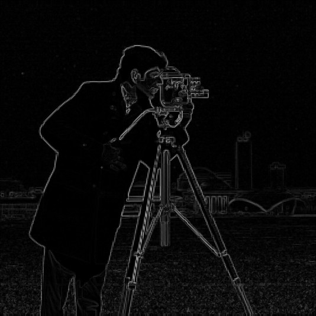

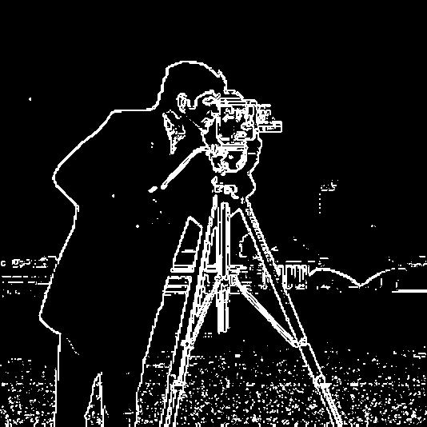
Threshold 0.15 keeps the person and tripod edges while removing much of the weaker grass texture. Lower thresholds retain more noise; higher thresholds lose faint contours. Some grass remains.
Signed derivatives show zero as gray. Gradient magnitudes in 1.2 and 1.3 share the display range [0, √2]; thresholds apply before display scaling.
1.3 Derivative of Gaussian
Build a normalized 9 × 9 Gaussian (σ = 1.5) with g = cv2.getGaussianKernel(9, 1.5) and G = g @ g.T. Blur, then differentiate. Use threshold 0.06 for the weaker smoothed gradients.

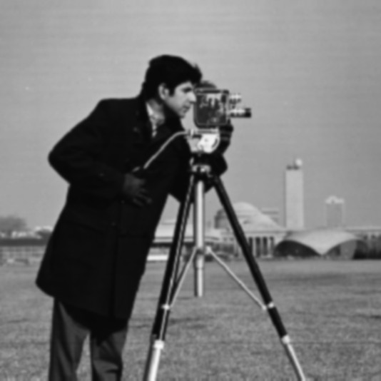

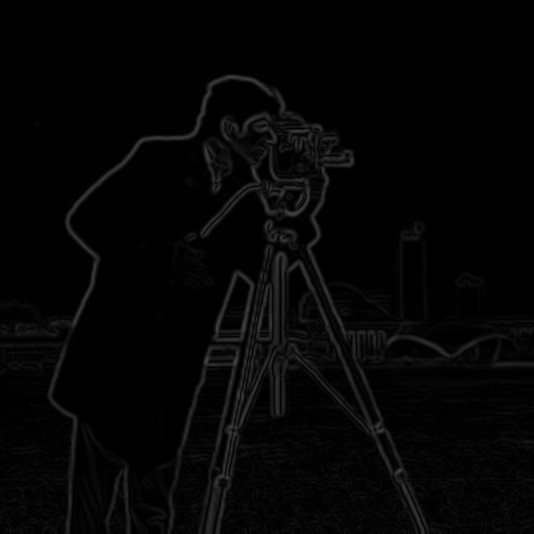

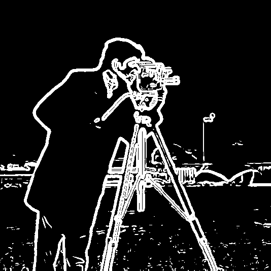
Full convolution of G with Dx and Dy gives 9 × 11 and 11 × 9 DoG filters. Applying these directly to the original matches blur-then-differentiate: both derivative arrays pass np.allclose.

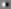

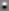
Compared with 1.2, smoothing suppresses grass texture and produces cleaner major contours, with wider edges and less fine detail.
2.1 Image Sharpening
Gaussian blur retains low frequencies. Subtract it from the original to isolate high frequencies, then add a scaled residual to strengthen edges:
S = I + αH = [(1 + α)δ − αG] ∗ I
Apply the single kernel [(1 + α)δ − αG] to each color channel using σ = 1.5 and an 11 × 11 Gaussian. Clip the final display to [0, 1].
Taj Mahal


My lake photograph


Larger α strengthens architecture, branches, and mountain edges. At α = 2, halos and exaggerated texture become more visible.
Blur and resharpen


Resharpening restores some edge contrast, but branches and mountain texture remain softer than the original. It cannot recover detail lost to blur.
High-frequency images show zero as gray; filtering uses the original signed values.
2.2 Hybrid Images
Combine low frequencies from A with high frequencies from B. B dominates close up; A becomes clearer at a smaller size or greater viewing distance. All three results use grayscale.
Derek + Nutmeg

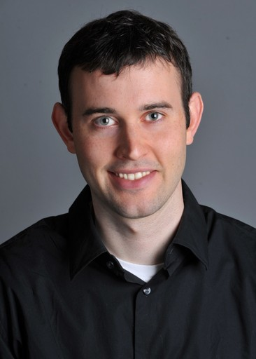

Align two manually selected eye centers with translation, rotation, and uniform scaling. Each output is 512 × 512, with eyes at (200, 205) and (312, 205).

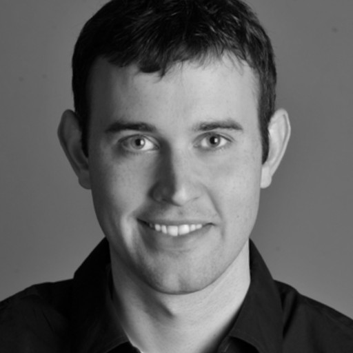

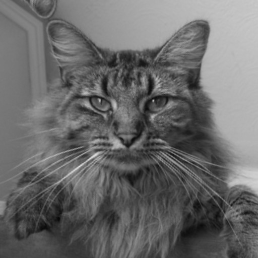


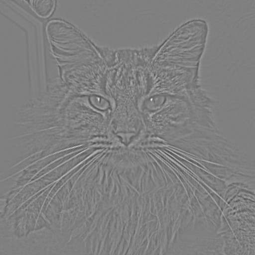
σlow = 8 removes Derek’s fine detail; σhigh = 3 retains Nutmeg’s fur and whiskers. Weight 0.8 keeps the cat visible without overwhelming Derek. The Gaussian half-amplitude cutoffs are approximately 0.0234 and 0.0625 cycles/pixel (0.1874/σ).

Frequency analysis
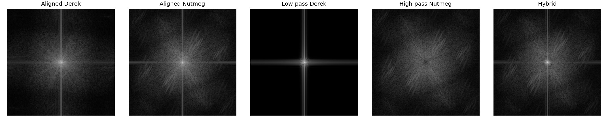
Low-pass filtering concentrates energy near the center; high-pass filtering suppresses the center and retains outer frequencies. The hybrid combines both. Spectra use the signed arrays before display scaling or clipping.
Two custom hybrids
The next two pairs are my own photographs, aligned by the eyes using the same method.
Portrait A + Portrait B


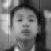
Portrait A supplies the broad face shape; B supplies hair, forehead, and mouth detail. A becomes clearer at the smaller size, but differing mouth shapes and head outlines leave double contours.
Portrait + puppy


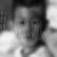
The portrait dominates at small size and puppy fur appears close up. The softer puppy image needs weight 1.8. This result is less successful: eye alignment leaves the muzzle and mouth mismatched.
| Hybrid | σ low | σ high | High-frequency weight |
|---|---|---|---|
| Derek / Nutmeg | 8 | 3 | 0.8 |
| Portrait A / Portrait B | 10 | 5 | 1 |
| Portrait / puppy | 12 | 4 | 1.8 |
2.3 Gaussian and Laplacian Stacks
Build five levels without downsampling or built-in pyramid functions. Every apple and orange level remains 512 × 367.
G₀ is the original. Blur each preceding level with incremental σ = 2, 4, 8, 16. Subtract adjacent Gaussian levels for the Laplacian bands; retain G₄ as the residual.
L₄ = G₄ · I = Σᵢ Lᵢ
Apple stacks
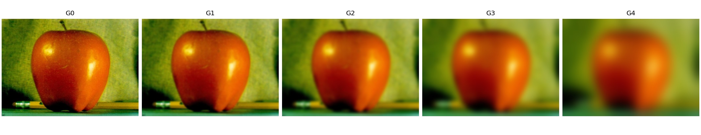
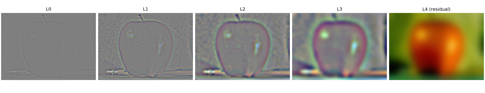
Orange stacks
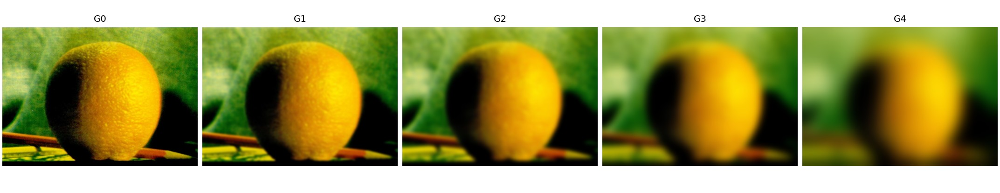
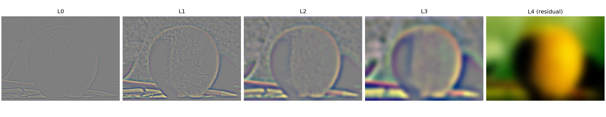
Figure 3.42 (a)–(l)
Rows show levels 0, 2, and 4. Columns show the masked apple band, masked orange band, and their sum. The bottom row sums all five levels to reconstruct each contribution and the final oraple. Signed panels share a display scale within each row.
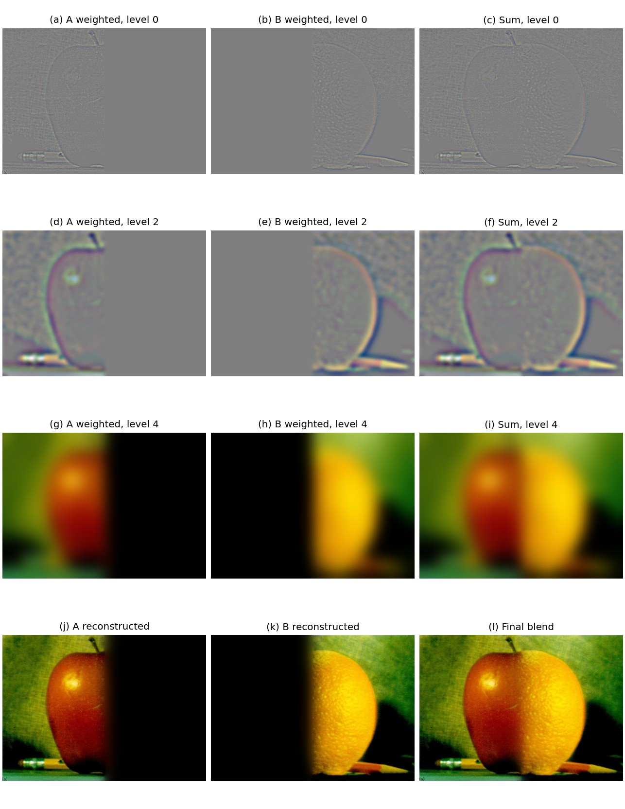
Summing all Laplacian bands and the residual reconstructs each original to floating-point precision.
2.4 Multiresolution Blending
White mask pixels select A; black pixels select B. Blur the mask at each stack level to make narrow transitions for fine detail and broad transitions for color and illumination.
Blend = Σᵢ Lᵢ blend
Use the same five levels and σ values as 2.3 for both images and the mask. Blend each RGB channel independently.
Apple + orange


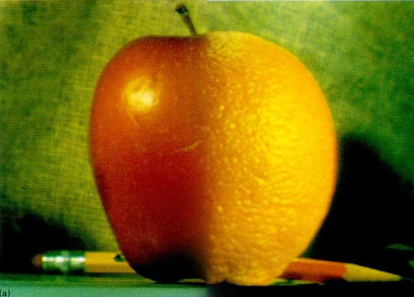
The blend smooths the color jump while preserving surface texture. Small differences in the fruit outlines remain.
Sunset + lakeshore


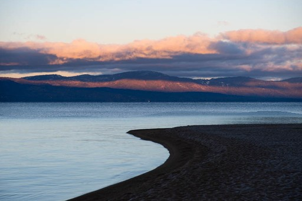

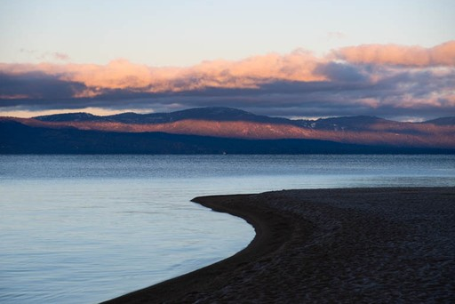
Shift A upward 20 pixels and place the curved seam in open water. The blend softens the color jump while retaining ripples and shoreline detail.
Coastal sky + waves


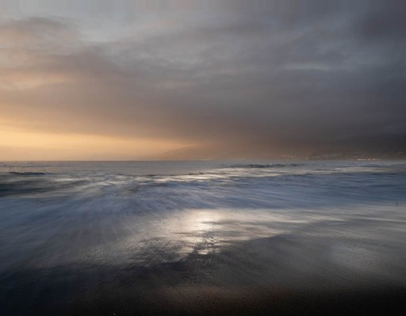
Shift A downward 10 pixels to align the horizons. The curved seam preserves A’s sky and B’s waves; blending softens the interrupted wave at the join. Lighting differences remain visible.
Both pairs are my own photographs. Resize to a maximum dimension of 512 pixels and place A on B’s canvas with replicated borders. Use y < c + 5 sin(2πx/W) + 3 sin(6πx/W): c = 194 for the lake (512 × 342), c = 216 for the beach (512 × 399).
Lake blend: masked Laplacian stacks
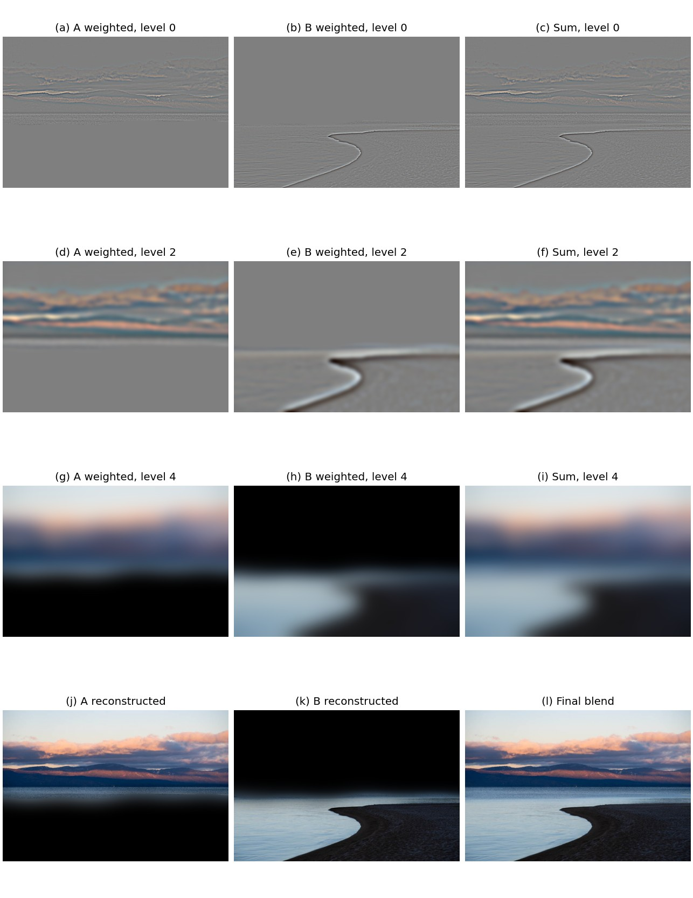
What I Learned
Different frequency bands need different treatment: sharpening strengthens fine detail, hybrids separate subjects by scale, and blending uses wider transitions for low frequencies. Sharpening also showed me that stronger edges cannot restore detail erased by blur.